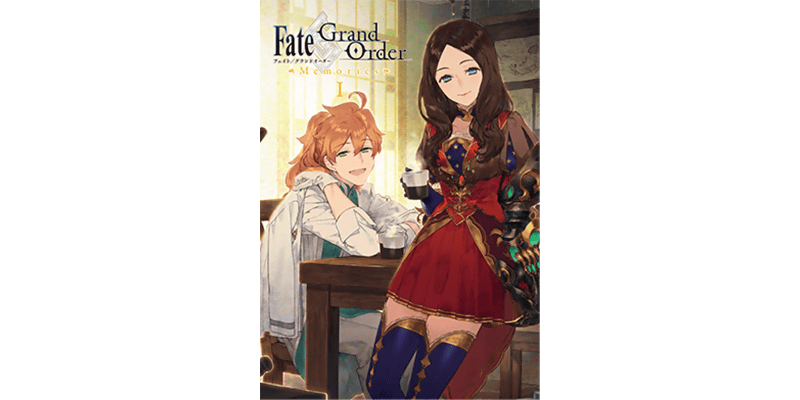
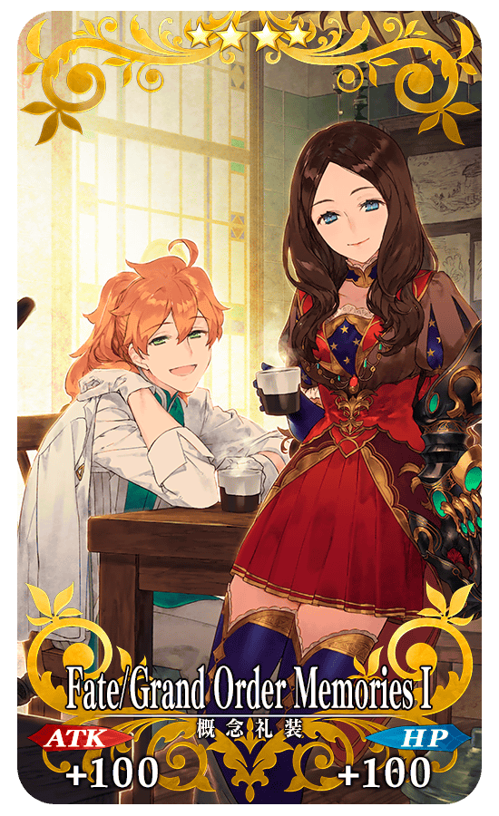
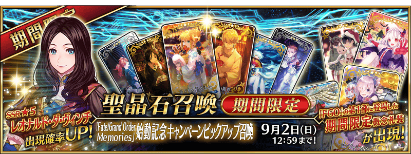

所謂「Fate/Grand Order Memories」，是在「Fate/Grand Order」中，以各式各樣的形式回顧Master體驗的“旅途回憶”的新FGO PROJECT。
做為該系列第1彈，是將與Servant們的旅途增添色彩的“概念禮裝”做為焦點的畫集「Fate/Grand Order Memories Ⅰ 概念禮裝畫集 第1部 2015.07-2016.12」。
本次為了記念「Fate/Grand Order Memories Ⅰ 概念禮裝畫集 第1部 2015.07-2016.12」的發售，舉辦「Fate/Grand Order Memories」啟動記念宣傳活動！
◆舉辦期間◆
2018年8月19日(日) 17:00～9月2日(日) 11:59

「Fate/Grand Order Memories Ⅰ 概念禮裝畫集 第1部 2015.07-2016.12」
價格:2,800円(含稅)
尺寸:A4版
發售日:2018年8月20日(一)
◆商品概要◆
做為「Fate/Grand Order Memories」系列第1彈的「Fate/Grand Order Memories Ⅰ 概念禮裝畫集 第1部 2015.07-2016.12」，是收錄在「Fate/Grand Order」第1部登場244張概念禮裝的插畫集。
收錄的所有視覺圖，是只用全彩高精細印刷來享受。
另外，也刊載79名繪師對第1部擔當插圖的評論和回憶。
除此以外，收錄著回顧第1部的活動年表等。
官方網站:https://memories.fate-go.jp/
通過下述的期間中在迦勒底之門出現的「Fate/Grand Order Memories」啟動記念關卡，得到關卡限定的概念禮裝吧！
◆舉辦期間◆
2018年8月19日(日) 17:00～9月2日(日) 11:59
◆關卡開放條件◆
通過「特異點F 炎上汙染都市 冬木」的Master對象
◆「Fate/Grand Order Memories」啟動記念關卡限定概念禮裝◆
|  |
★★★★SR |
※請注意「Fate/Grand Order Memories」啟動記念關卡沒有冒險部份。

◆「「Fate/Grand Order Memories」啟動記念宣傳活動Pick Up召喚」期間◆
期間:2018年8月19日(日) 17:00～9月2日(日) 11:59
舉辦期間限定「「Fate/Grand Order Memories」啟動記念宣傳活動Pick Up召喚」！
「★5(SSR)李奧納多・達文西」以期間限定登場！
Pick Up在「Fate/Grand Order Memories Ⅰ 概念禮裝畫集 第1部 2015.07-2016.12」的主視覺圖被描繪的「★5(SSR)李奧納多・達文西」。
另外，抽出的概念禮裝，是在主線關卡第1部登場的期間限定概念禮裝。
※李奧納多・達文西、期間限定概念禮裝在「Fate/Grand Order Memories」啟動記念宣傳活動Pick Up召喚期間結束後不會追加到故事召喚。
※會自故事召喚、友情點數召喚抽出的常駐概念禮裝不會被抽出。
※做為抽出對象的★3(R)的期間限定概念禮裝不會從友情點數召喚被抽出。
詳情請在聖晶石召喚畫面左下的召喚詳細確認。
Pick Up期間中，期間限定Servant的出現機率提升！
10次召喚中確定1張★4(SR)以上和確定1位★3(R)以上的Servant！
※確定★4(SR)以上包含Servant和概念禮裝。
★★★★★SSR
★★★★SR
★★★R
◆在「「Fate/Grand Order Memories」啟動記念宣傳活動Pick Up召喚」會被抽出的概念禮裝一覧◆
| 登場活動 | 稀有度 | 概念禮裝名 |
|---|---|---|
| 月の女神はお団子の夢を見るか？ | ★★★★★ | 月女神の沐浴 |
| ★★★★ | ムーニー･ジュエル | |
| 歌うカボチャ城の冒険 ～マッドパーティー2015～ |
★★★★★ | ハロウィン･プチデビル |
| ★★★★ | ハロウィン･アレンジメント | |
| ★★★ | ジャック･オー･ランタン | |
| ぐだぐだ本能寺 | ★★★★★ | ぐだぐだ看板娘 |
| ★★★★ | 打ち上げオーダー！ | |
| ★★★ | Fateぐだぐだオーダー | |
| ほぼ週間 サンタオルタさん | ★★★★★ | プレゼント･フォー･マイマスター |
| ★★★★ | 聖者の行進 | |
| ★★★ | 雷光のトナカイ君 | |
| 2016年、お正月のキャンペーン！ | ★★★★★ | グランド･ニューイヤー |
| ★★★★ | ヒロイック･ニューイヤー | |
| ★★★ | 2016年の平穏 | |
| ★★★ | ジャングルの掟 | |
| セイバーウォーズ ～リリィのコスモ武者修行～ |
★★★★★ | 紅蓮なり影の国 |
| ★★★★ | みこっと！花嫁修業 | |
| ★★★ | 正射必中 | |
| チョコレート・レディの空騒ぎ -Valentine 2016- |
★★★★★ | ストリート･チョコメイド |
| ★★★★ | キッチン☆パティシエール | |
| ★★★ | 涙のバレンタイン道場 | |
| コラボレーションイベント「空の境界/the Garden of Order」 | ★★★★★ | 老成の翁 |
| ★★★★★ | 冠位人形師 | |
| ★★★★ | 拳舞は鮮やかに | |
| ★★★★ | 歪曲の魔眼 | |
| ★★★ | スプリンター | |
| ★★★ | リピート･マジック | |
| カルデアボーイズコレクション2016 | ★★★★★ | キス･ユア･ハンド |
| ★★★★★ | センセイとボク | |
| ★★★★★ | ヴァーサス | |
| ★★★★ | 月下の四匹 | |
| ★★★★ | グラスフル･スイートタイム | |
| ★★★★ | ノイジー･オブセッション | |
| ★★★ | サロン･ド･マリー | |
| ★★★ | プリンス･オブ･スレイヤー | |
| 高難易度イベント 「鬼哭酔夢魔京 羅生門」 |
★★★★★ | 狐の夜の夢 |
| ★★★★ | 恋談火焔行 | |
| ★★★ | 勧進帳読み上げ | |
| 星の三蔵ちゃん、天竺に行く | ★★★★★ | Go West!! |
| ★★★★ | 三昧真火 | |
| ★★★ | 三色兼備 | |
| 天魔御伽草子 鬼ヶ島 | ★★★★★ | 花より団子 |
| ★★★★ | 忠犬待ったなし | |
| ★★★ | 秘剣･雉子返し | |
| FGO夏祭り2016 ～1st Anniversary～ |
★★★★★ | 足どりは軽やかに |
| ★★★★★ | 王の相伴 | |
| ★★★★ | ゴールドフィッシュ･スクーピング | |
| ★★★ | ファイヤーフラワー | |
| 夏だ！ 海だ！ 開拓だ！ FGO 2016 Summer カルデアサマーメモリー ～癒やしのホワイトビーチ～ |
★★★★★ | パイレーツ･パーティー！ |
| ★★★★ | トワイライト･メモリー | |
| ★★★ | シャイニー･ゴッデス | |
| 夏だ！ 海だ！ 開拓だ！ FGO 2016 Summer カルデアヒートオデッセイ ～進化のシヴィライゼーション～ |
★★★★★ | ナイツ･オブ･マリーンズ |
| ★★★★ | ミートウォーズ | |
| ★★★ | 虚影の塵風かき氷 | |
| コラボレーションイベント 「魔法少女紀行 ～プリズマ・コーズ～」 |
★★★★★ | 蒼玉の魔法少女 |
| ★★★★ | 見敵必殺 | |
| ★★★ | ずんがずんが！ | |
| ネロ祭再び ～2016 Autumn～ | ★★★★★ | 誉れを此処に |
| ★★★★ | 原初のレギオン | |
| ★★★ | 月に吼える | |
| ハロウィン・カムバック！ 超極☆大かぼちゃ村 ～そして冒険へ……～ |
★★★★★ | デンジャラス･ビースト |
| ★★★★ | 月夜の魔女 | |
| ★★★ | ロマニ･アーキマン伯爵の歓待 | |
| 二代目はオルタちゃん ～2016クリスマス～ |
★★★★★ | 静穏なひと時 |
| ★★★★ | 聖夜の読書 | |
| ★★★ | 聖者の招待 |


介紹李奧納多・達文西的寶具演出！
在「Fate/Grand Order」官方網站內的公告中，公開了「★5(SSR)李奧納多・達文西」的寶具演出。敬請確認。